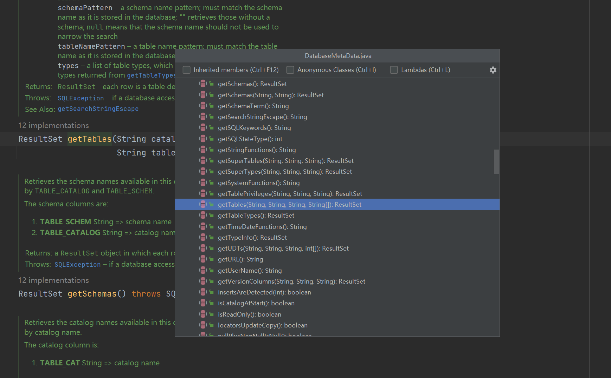
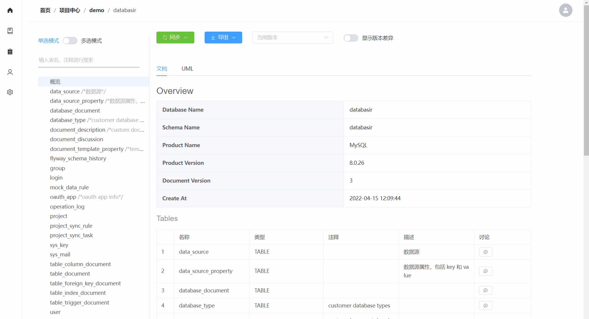

前言
在工作中经常会遇到需要交付数据库文档的场景，而编写这样的文档又是一个很枯燥、重复的事情，完全可以通过自动化的方式来完成这样的工作。
本文提供了一个在 JAVA 中如何基于 JDBC 来实现生成数据库文档的思路，希望对你有所帮助。
第一步：可行性？
JDBC 是 Java Database Connectivity 的缩写，从名字就能看出来是 Java 定义的连接数据库的一个标准，这个标准的具体体现就是一系列接口
java.sql.Connectionjava.sql.DatabaseMetaDatajava.sql.Driverjava.sql.Statementjavax.sql.DataSource- …
其中 java.sql.DatabaseMetaData （以下简称 DatabaseMetaData ）接口就是对数据库元信息的抽象，这里的元信息就包含了 schema、table、index、column 等我们熟知的概念。
通过 IDEA 我们可以很轻松的查看 DatabaseMetaData 接口定义的方法列表，比如
- getTables：获取表信息
- getColumns：获取列信息
- getIndexInfo：获取索引信息
- getPrimaryKeys：获取主键信息
- …

由此可见， 基于 JDBC 来生成数据库文档的可行性是没问题的，那么接下来我们就进入实验阶段。
第二步：Demo
实验环境：
- Mysql
- Java
- Mysql 数据准备
CREATE DATABASE IF NOT EXISTS demo;
CREATE TABLE demo.user
(
id INT PRIMARY KEY AUTO_INCREMENT NOT NULL,
username VARCHAR(255) NOT NULL,
nickname VARCHAR(255) NOT NULL DEFAULT '',
create_at TIMESTAMP DEFAULT CURRENT_TIMESTAMP NOT NULL,
CONSTRAINT uk_user_username UNIQUE (username)
) CHARSET utf8mb4
COLLATE utf8mb4_unicode_ci COMMENT '用户';
CREATE TABLE demo.post
(
id INT PRIMARY KEY AUTO_INCREMENT NOT NULL,
user_id INT NOT NULL,
title VARCHAR(255) NOT NULL,
content TEXT NOT NULL,
create_at TIMESTAMP DEFAULT CURRENT_TIMESTAMP NOT NULL
) CHARSET utf8mb4
COLLATE utf8mb4_unicode_ci COMMENT '文章';
实验目标：
- 获取 demo 库中的 user、post 表数据
实验流程：
首先我们需要通过 java.sql.Connection （以下简称 Connection）的 getMetaData 方法来获取上一节提到的 DatabaseMetaData 类。
public interface Connection extends Wrapper, AutoCloseable {
DatabaseMetaData getMetaData() throws SQLException;
}
Connection 的获取需要依赖数据库驱动，以 Mysql 为例，就得通过通过构建工具引入 mysql-connector-java 这个库。
下面的代码展示了在 Gradle 中引入的方式
dependencies {
implementation "mysql:mysql-connector-java:8.0.27"
}
依赖刷新完成以后就可以创建 Connection 并获取 DatabaseMetaData 对象了：
class Demo {
public static void main(String[] args) throws SQLException {
DatabaseMetaData metaData = getMetaData(); // 成功获取 metaData 对象
}
public static DatabaseMetaData getMetaData() throws SQLException {
try {
// 加载驱动
Class.forName("com.mysql.cj.jdbc.Driver");
} catch (ClassNotFoundException e) {
throw new IllegalStateException(e);
}
Properties info = new Properties();
// 填入你的用户名、密码和连接地址
info.put("user", "root");
info.put("password", "123456");
String jdbcUrl = "jdbc:mysql://127.0.0.1:3306/demo";
Connection connection = DriverManager.getConnection(jdbcUrl, info);
return connection.getMetaData();
}
}
前面我们已经简单展示过 DatabaseMetaData 的 API 了，其中 getTables 就是获取所有表的方法，完整查看一下该方法的定义
ResultSet getTables(String catalog,
String schemaPattern,
String tableNamePattern,
String types[]) throws SQLException;
在源码中有完整的注释，限于篇幅我就不贴了，直接说明一下这些参数
- catalog：catalog 名称，可以为 null
- schemaPattern：schema 名称模糊查询，可以为 null
- tableNamePattern：表名模糊查询，表名称，可以为 null
- types：类型，比如 VIEW、TABLE 等，可以为 null
在 Mysql 中，catalog 和 schema 的其实是一样的，都代表着 database 的名称。
该方法返回的 ResultSet 在取值也需要遵循 JDBC 的规范，一个 ResultSet 代表返回的一行数据，其中我们关注的列定义如下（完整定义可以查看该方法的源码注释）
| 列名称 | 说明 |
|---|---|
| TABLE_CAT | 表所属的 catalog |
| TABLE_SCHEM | 表所属的 schema |
| TABLE_NAME | 表名称 |
| TABLE_TYPE | 表类型，如 TABLE、VIEWSYSTEM TABLE 等 |
| REMARKS | 备注，即通过 comment 语句指定的说明 |
| … |
方法的参数和返回值都确认以后我们就可以继续完善前面的 main 方法了：
class Demo {
public static void main(String[] args) throws SQLException {
DatabaseMetaData metaData = getMetaData();
// 获取 demo 库下所有表
ResultSet result = metaData.getTables("demo", null, null, null);
while (result.next()) {
String msg = String.format("Table：%s, Type: %s, Comment: %s",
result.getString("TABLE_NAME"),
result.getString("TABLE_TYPE"),
result.getString("REMARKS"));
System.out.println(msg);
}
}
// 忽略 getMetaData() 方法
}
不出意外控制台就会打印以下信息
Table：post, Type: TABLE, Comment: 文章
Table：user, Type: TABLE, Comment: 用户
第三步：完善
获取到表的信息以后，还需要根据表名去获取对应的列、索引、外键、主键等内容，得到这些数据以后就能生成一份完整的数据库文档了。
这些内容的获取在 DatabaeMetaData 中都有对应的方法
ResultSet getColumns(catalog, schemaPattern, tableNamePattern, columnNamePattern)ResultSet getIndexInfo(catalog, schema, table, unique, approximate)ResultSet getPrimaryKeys(catalog, schema,table)ResultSet getImportedKeys(catalog, schema, table)
方法的调用和取值整体思路与第二步中的代码基本一致，如果你还是没有思路的话，可以在这里查看我已经实现了的代码：
除此之外，基于这个思路我还将其完善成了一个产品 Databasir ，它是一个在线的数据库文档管理平台，或许你可以直接使用：

参考
- Databasir，https://github.com/vran-dev/databasir